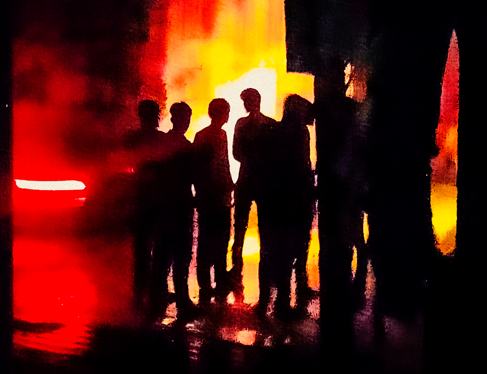

Selected Work
Moments worth noticing.
—
—
01 / 06
About
I am Chetan Sharma, a BCA student from Bharatpur, Rajasthan, drawn to photographing everyday life.
I look for ordinary moments — people waiting, working, walking, talking, and simply being themselves. I am interested in light, shadow, distance and the small details that often go unnoticed.
Photography is my way of observing the place around me and keeping those moments from disappearing.
Read more →- Based in
- Bharatpur, Rajasthan, India
- Studying
- Bachelor of Computer Applications
- Photography
- Street & Documentary
- Approach
- Observation, light, shadow and everyday life
Contact
Have something
to talk about?
For photography projects, collaborations, exhibitions or simply to get in touch — the door is open.
Get in Touch →